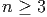
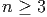
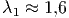
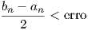
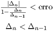
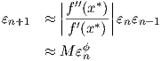

Tabela 3.4: Quadro comparativo.
| Método | Convergência | Erro | Critério de parada |
Bisseção | Linear |  |  |
| () | |||
| Iteração | Linear |  |  |
| linear | ( ) ) | ||
Newton | Quadrática |  |  |
( ) ) | |||
Secante |  |  |  |
Quando usamos métodos iterativos precisamos determinar um critério de parada. A Tabela 3.4 indica critérios de parada usuais para os métodos que estudamos neste capítulo.
| Método | Convergência | Erro | Critério de parada |
Bisseção | Linear | | |
| () | |||
| Iteração | Linear | | |
| linear | () | ||
Newton | Quadrática | | |
| () | |||
Secante | | | |
Observação 3.6.1. O erro na tabela sempre se refere ao erro absoluto
esperado. Nos três últimos métodos, é comum que se exija como critério de
parada que a condição seja satisfeita por alguns poucos passos consecutivos.
Outros critérios podem ser usados. No métodos das secantes, deve-se ter o
cuidado de evitar divisões por zero quando  muito pequeno em
relação à resolução do sistema de numeração.
muito pequeno em
relação à resolução do sistema de numeração.
E 3.6.2. Dê uma interpretação geométrica ao método das secantes. Qual a vantagem do método das secantes sobre o método de Newton?
E 3.6.4. Refaça o problema 3.2.7 usando o método de Newton e das secantes.
E 3.6.5. Seja dada uma função  duas vezes continuamente diferenciável.
Faça uma análise assintótica para mostrar que as iterações do método das
secantes satisfazem:
duas vezes continuamente diferenciável.
Faça uma análise assintótica para mostrar que as iterações do método das
secantes satisfazem:
 |
para aproximações iniciais  e
e  suficientemente próximas de
suficientemente próximas de  , onde
, onde
 .
.
Resposta. Seja  um função tal que
um função tal que  e
e  . Considere o processo iterativo do método das
secantes:
. Considere o processo iterativo do método das
secantes:


Subtraindo  de ambos os lados temos:

Definimos , equivalente a 
Aproximamos a função  no numerador por
![ϵn[ϵ f′(x∗)+ϵ2 f′′(x∗)]− ϵ [ϵnf′(x∗)+ϵ2f′′(x∗)]
ϵn+1 ≈ ---n−1-----fn−(x1∗+2ϵ-)−-f(xn∗−+1ϵ--)-----n--2---
( n) n−1
f′′(x2∗)ϵnϵ2n−1−-ϵn−1ϵ2n-
= f(x∗+ ϵn)− f(x∗+ϵn−1)
f′′(x∗)ϵ ϵ (ϵ − ϵ)
= 1--∗--nn−1--n−∗1---n-
2f(x + ϵn)− f(x +ϵn−1)](main1773x.png)
Observamos, agora, que
|
| (3.7) |
Portanto:
|
| (3.8) |
ou, equivalentemente:
|
| (3.9) |
